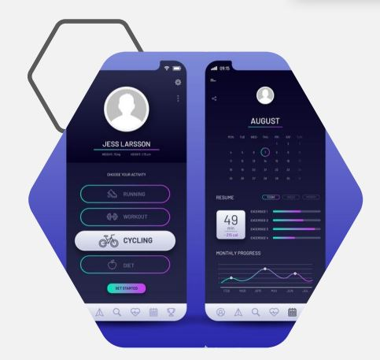
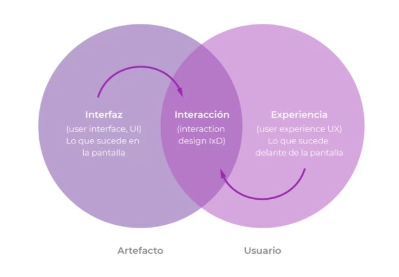

Proposito
User Interface se centra en la parte visual.
Es decir, si UX se encarga de que un
producto sea útil para los usuarios, UI lo
hace atractivo y visual. Hace parte del UX.
Es importante aclarar que Diseño de
Interfaces no equivale a Diseño Gráfico: el
diseño de la interfaz puede incluir o no
diseño gráfico. Por ejemplo, cuando se
realiza un wireframe está diseñando una
interfaz pero no está aplicando diseño
gráfico, y cuando se aplican reglas de estilo
a una interfaz se está aplicando diseño
gráfico pero no se está diseñando una
interfaz.
UI, UX, IxD: ¿Cuál es la diferencia?
Recuperado el 22/05/2021
de https://blog.opinno.io/es/blog/que-es-la-interaccion-humano-computadora

La interfaz de usuario
Diseño de Interfaces (UI), Experiencia de Usuario (UX) y Diseño de Interacción (IxD)
se suelen usar indistintamente. Pero no solamente no son sinónimos,
sino que cada uno implica un proceso y un foco diferente.
UI, hace foco en el artefacto. UX, en el usuario. IxD, en el contacto entre el
usuario y el artefacto.
UI, UX, IxD: ¿Cuál es la diferencia?
Recuperado el 22/05/2021
de https://www.kambrica.com/ui-ux-ixd-cual-es-la-diferencia/

Interacción Humano Ordenador
La disciplina que estudia cómo las personas interactúan con las
computadoras y hasta qué punto las computadoras se desarrollan para
interactuar con las personas se llama Interacción Humano-Computadora.
HCI consta de tres componentes: los usuarios, los ordenadores y
la interacción entre ellos
¿Qué es la Interacción Humano-Computadora?
Recuperado el 22/05/2021
de https://blog.opinno.io/es/blog/que-es-la-interaccion-humano-computadora